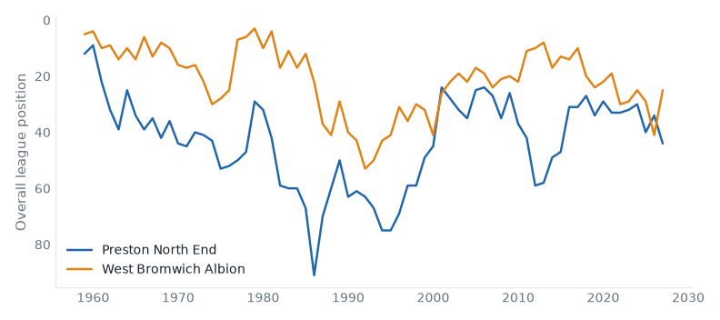
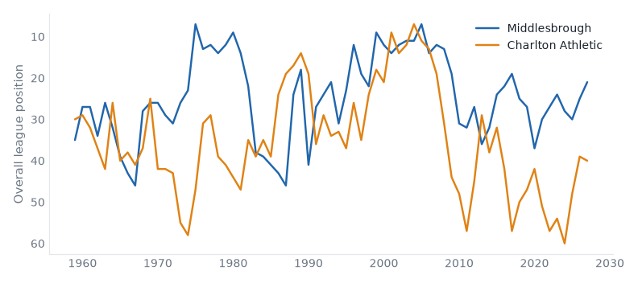

Premier League and Championship, 26 October to 01 November 2026. 43 results.Friday's preview.
Hull 2–2 Ipswich. Friday's case: above level, neighbours, yo-yo club, promoted last season. Hull stay 10th; Ipswich down from 12th to 13th.
Man City 0–1 Brighton. Friday's case: top-three clash, above level. Man City down from 1st to 2nd; Brighton stay 3rd.
Coventry 3–1 Sunderland. Friday's case: above level, neighbours, yo-yo club, champions last season. Coventry up from 19th to 16th; Sunderland stay 20th.
West Ham 1–3 West Brom. Friday's case: below level, neighbours, yo-yo club, relegated last season. West Ham down from 4th to 8th; West Brom up from 6th to 5th.
Lincoln 1–3 Birmingham. Friday's case: 2 above level, yo-yo club, champions last season. Lincoln down from 15th to 16th; Birmingham up from 7th to 6th.
Bournemouth 2–0 Leeds. Friday's case: 2 above level, yo-yo club. Bournemouth up from 13th to 7th; Leeds down from 7th to 11th.
Brentford 2–0 Nott'm Forest. Friday's case: 2 above level, yo-yo club. Brentford stay 6th; Nott'm Forest down from 18th to 19th.
Tottenham 2–0 Crystal Palace. Friday's case: above level, neighbours, yo-yo club. Tottenham up from 14th to 8th; Crystal Palace down from 17th to 18th.
Preston 1–1 West Brom compare
Championship, Sat 24 Oct
Preston North End have 5 points from 12 games, their worst start in their record.

Middlesbrough 3–0 Charlton compare
Championship, Sat 31 Oct
Middlesbrough have 28 points from 13 games, their best start in their record. Middlesbrough have 11 games unbeaten in a row, their longest run since 2016/17.

Stoke 2–0 Preston compare
Championship, Sat 31 Oct
Preston North End have 5 points from 13 games, their worst start in their record.
Chelsea 0–2 Tottenham compare
Premier League, Sat 24 Oct
Tottenham Hotspur have 9 points from 8 games, their worst start since 2008/09.
Coventry 0–1 Fulham compare
Premier League, Sat 24 Oct
Fulham beat Coventry City for the first time since 1967/68.
Blackburn 2–0 Wrexham compare
Championship, Sat 24 Oct
Blackburn Rovers beat Wrexham for the first time since 1980/81.
Lincoln 4–1 Burnley compare
Championship, Sat 24 Oct
Lincoln City beat Burnley for the first time since 1990/91.
QPR 5–0 Swansea compare
Championship, Sat 24 Oct
Swansea City have 23 points from 12 games, their best start since 2007/08.
West Ham 2–3 Southampton compare
Championship, Sat 24 Oct
Southampton have 24 points from 12 games, their best start since 2014/15.
Man United 0–3 Bournemouth compare
Premier League, Sun 25 Oct
Manchester United have 7 points from 8 games, their worst start since 1986/87.
Sunderland 0–0 Leeds compare
Premier League, Sun 25 Oct
Sunderland have 5 points from 8 games, their worst start since 2016/17.
Sheffield United 1–0 Wrexham compare
Championship, Fri 30 Oct
Sheffield United beat Wrexham for the first time since 1982/83.
Chelsea 2–0 Man United compare
Premier League, Sat 31 Oct
Manchester United have 7 points from 9 games, their worst start since 1986/87.
Coventry 3–1 Sunderland compare
Premier League, Sat 31 Oct
Sunderland have 5 points from 9 games, their worst start since 2016/17.
Man City 0–1 Brighton compare
Premier League, Sat 31 Oct
Brighton & Hove Albion have 19 points from 9 games, their best start since 2015/16.
Southampton 4–1 QPR compare
Championship, Sat 31 Oct
Southampton have 27 points from 13 games, their best start since 2011/12.
Swansea 4–0 Blackburn compare
Championship, Sat 31 Oct
Swansea City have 26 points from 13 games, their best start since 2005/06.
West Ham 1–3 West Brom compare
Championship, Sat 31 Oct
West Bromwich Albion beat West Ham United for the first time since 2016/17.
| Fri 23 late | Ipswich | 1–1 | Nott'm Forest | ↓1 ↓1 | compare | |
| Sat 24 late | Arsenal | 2–0 | Everton | ↑1 ↓3 | compare | |
| Sat 24 late | Aston Villa | 2–1 | Man City | ↓1 | compare | best start since 2017/18 |
| Sat 24 late | Chelsea | 0–2 | Tottenham | ↑1 ↑6 | compare | worst start since 2008/09 |
| Sat 24 late | Coventry | 0–1 | Fulham | ↑3 | compare | first win v Coventry City since 1967/68 |
| Sun 25 late | Crystal Palace | 0–2 | Newcastle | ↓1 ↓4 | compare | |
| Sun 25 late | Hull | 1–1 | Brentford | compare | best start since 2021/22 | |
| Sun 25 late | Liverpool | 2–0 | Brighton | ↓1 | compare | |
| Sun 25 late | Man United | 0–3 | Bournemouth | ↓1 ↑6 | compare | worst start since 1986/87 |
| Sun 25 late | Sunderland | 0–0 | Leeds | ↓4 | compare | worst start since 2016/17 |
| Sat 31 | Aston Villa | 1–1 | Fulham | compare | ||
| Sat 31 | Bournemouth | 2–0 | Leeds | ↑6 ↓4 | compare | |
| Sat 31 | Brentford | 2–0 | Nott'm Forest | ↓1 | compare | best start since 2020/21 |
| Sat 31 | Chelsea | 2–0 | Man United | ↑1 ↓1 | compare | worst start since 1986/87 |
| Sat 31 | Coventry | 3–1 | Sunderland | ↑3 | compare | worst start since 2016/17 |
| Sat 31 | Hull | 2–2 | Ipswich | ↓1 | compare | |
| Sat 31 | Man City | 0–1 | Brighton | ↓1 | compare | best start since 2015/16 |
| Sat 31 | Tottenham | 2–0 | Crystal Palace | ↑6 ↓1 | compare | worst start since 2019/20 |
| Sun 01 | Liverpool | 0–1 | Arsenal | ↓1 ↑1 | compare |
| P | W | D | L | GD | Pts | ||
|---|---|---|---|---|---|---|---|
| 1 | Arsenal | 4 | 4 | 0 | 0 | +7 | 12 |
| 2 | Manchester City | 5 | 4 | 0 | 1 | +4 | 12 |
| 3 | Brighton & Hove Albion | 4 | 3 | 1 | 0 | +12 | 10 |
| 4 | Brentford | 5 | 3 | 1 | 1 | +7 | 10 |
| 5 | Chelsea | 5 | 3 | 1 | 1 | +5 | 10 |
| 6 | Bournemouth | 5 | 2 | 2 | 1 | +3 | 8 |
| 7 | Hull City | 5 | 1 | 4 | 0 | +2 | 7 |
| 8 | Everton | 4 | 2 | 1 | 1 | +1 | 7 |
| 9 | Tottenham Hotspur | 5 | 2 | 1 | 2 | +1 | 7 |
| 10 | Ipswich Town | 4 | 2 | 1 | 1 | 0 | 7 |
| 11 | Leeds United | 4 | 1 | 3 | 0 | +3 | 6 |
| 12 | Coventry City | 5 | 2 | 0 | 3 | -2 | 6 |
| 13 | Newcastle United | 4 | 1 | 2 | 1 | 0 | 5 |
| 14 | Aston Villa | 5 | 1 | 2 | 2 | -1 | 5 |
| 15 | Liverpool | 5 | 1 | 2 | 2 | -2 | 5 |
| 16 | Fulham | 4 | 1 | 1 | 2 | -1 | 4 |
| 17 | Manchester United | 4 | 1 | 1 | 2 | -1 | 4 |
| 18 | Sunderland | 4 | 1 | 1 | 2 | -3 | 4 |
| 19 | Crystal Palace | 4 | 1 | 0 | 3 | -4 | 3 |
| 20 | Nottingham Forest | 4 | 0 | 1 | 3 | -3 | 1 |
| Fri 23 late | Bolton | 1–5 | Middlesbrough | ↓1 | compare | first win v Bolton Wanderers since 2018/19 |
| Sat 24 late | Blackburn | 2–0 | Wrexham | ↓3 ↓1 | compare | first win v Wrexham since 1980/81 |
| Sat 24 late | Cardiff | 1–0 | Birmingham | ↓1 ↑1 | compare | |
| Sat 24 late | Charlton | 1–3 | Norwich | ↓1 ↑5 | compare | |
| Sat 24 late | Lincoln | 4–1 | Burnley | ↓1 | compare | first win v Burnley since 1990/91 |
| Sat 24 late | Portsmouth | 2–1 | Millwall | ↑1 | compare | |
| Sat 24 late | Preston | 1–1 | West Brom | ↑1 | compare | worst start on record |
| Sat 24 late | QPR | 5–0 | Swansea | ↓1 | compare | best start since 2007/08 |
| Sat 24 late | Sheffield United | 1–1 | Derby | ↑2 | compare | worst start since 2020/21 |
| Sat 24 late | Stoke | 0–0 | Bristol City | ↑2 | compare | |
| Sat 24 late | West Ham | 2–3 | Southampton | ↓4 | compare | best start since 2014/15 |
| Sat 24 late | Wolves | 1–0 | Watford | ↑1 | compare | first win v Watford since 2021/22 |
| Fri 30 | Sheffield United | 1–0 | Wrexham | ↑2 ↓1 | compare | first win v Wrexham since 1982/83 |
| Sat 31 | Bolton | 2–3 | Bristol City | ↓1 | compare | first win v Bolton Wanderers since 2018/19 |
| Sat 31 | Burnley | 0–0 | Portsmouth | compare | ||
| Sat 31 | Lincoln | 1–3 | Birmingham | ↓1 ↑1 | compare | worst start since 2021/22 |
| Sat 31 | Middlesbrough | 3–0 | Charlton | ↓1 | compare | best start on record |
| Sat 31 | Millwall | 4–1 | Derby | ↑1 | compare | worst start since 2020/21 |
| Sat 31 | Norwich | 3–2 | Watford | ↑5 | compare | worst start since 2019/20 |
| Sat 31 | Southampton | 4–1 | QPR | ↓1 | compare | best start since 2011/12 |
| Sat 31 | Stoke | 2–0 | Preston | ↑2 | compare | worst start on record |
| Sat 31 | Swansea | 4–0 | Blackburn | ↓3 | compare | best start since 2005/06 |
| Sat 31 | West Ham | 1–3 | West Brom | ↓4 ↑1 | compare | first win v West Ham United since 2016/17 |
| Sat 31 | Wolves | 3–0 | Cardiff | ↑1 ↓1 | compare | first win v Cardiff City since 2018/19 |
| P | W | D | L | GD | Pts | ||
|---|---|---|---|---|---|---|---|
| 1 | Southampton | 7 | 6 | 1 | 0 | +15 | 19 |
| 2 | Middlesbrough | 7 | 5 | 2 | 0 | +8 | 17 |
| 3 | Swansea City | 7 | 4 | 2 | 1 | +8 | 14 |
| 4 | Wolverhampton Wanderers | 7 | 4 | 2 | 1 | +6 | 14 |
| 5 | Stoke City | 7 | 4 | 1 | 2 | +6 | 13 |
| 6 | Cardiff City | 6 | 3 | 3 | 0 | +7 | 12 |
| 7 | Blackburn Rovers | 6 | 4 | 0 | 2 | +4 | 12 |
| 8 | Queens Park Rangers | 6 | 3 | 2 | 1 | +8 | 11 |
| 9 | Millwall | 7 | 3 | 2 | 2 | +6 | 11 |
| 10 | West Bromwich Albion | 6 | 3 | 2 | 1 | +3 | 11 |
| 11 | Sheffield United | 7 | 3 | 2 | 2 | +2 | 11 |
| 12 | Birmingham City | 6 | 2 | 4 | 0 | +7 | 10 |
| 13 | West Ham United | 7 | 3 | 1 | 3 | +7 | 10 |
| 14 | Portsmouth | 6 | 3 | 1 | 2 | 0 | 10 |
| 15 | Watford | 6 | 3 | 1 | 2 | -1 | 10 |
| 16 | Norwich City | 7 | 3 | 0 | 4 | +1 | 9 |
| 17 | Charlton Athletic | 6 | 2 | 3 | 1 | 0 | 9 |
| 18 | Wrexham | 6 | 2 | 2 | 2 | +2 | 8 |
| 19 | Bristol City | 6 | 2 | 0 | 4 | -3 | 6 |
| 20 | Bolton Wanderers | 7 | 2 | 0 | 5 | -6 | 6 |
| 21 | Burnley | 7 | 0 | 5 | 2 | -2 | 5 |
| 22 | Lincoln City | 7 | 1 | 2 | 4 | -8 | 5 |
| 23 | Preston North End | 6 | 1 | 1 | 4 | -5 | 4 |
| 24 | Derby County | 6 | 0 | 2 | 4 | -6 | 2 |
Built from the English football database, tiers 1–5 from 1958/59. Results from football-data.co.uk. Archived copy.